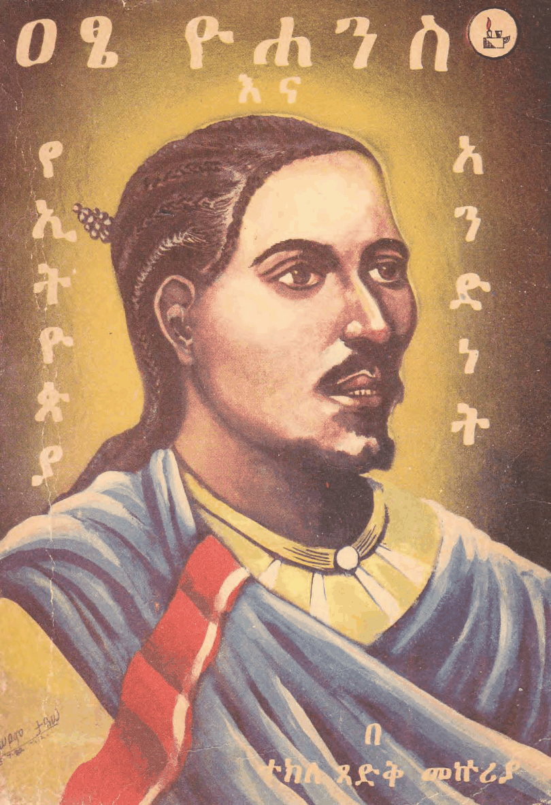
ዐፄ ዮሐንስ እና የኢትዮጵያ አንድነት atse yohenes ena yeityopya anednet ተክለ ጻድቅ መኩሪያ · 1982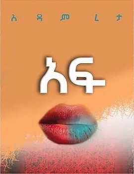
አፍ AF አዳም ረታ · 2018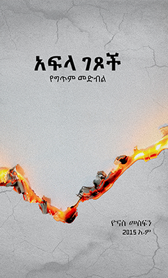
አፍላ ገጾች afla getsoch ዮናስ መስፍን · 2015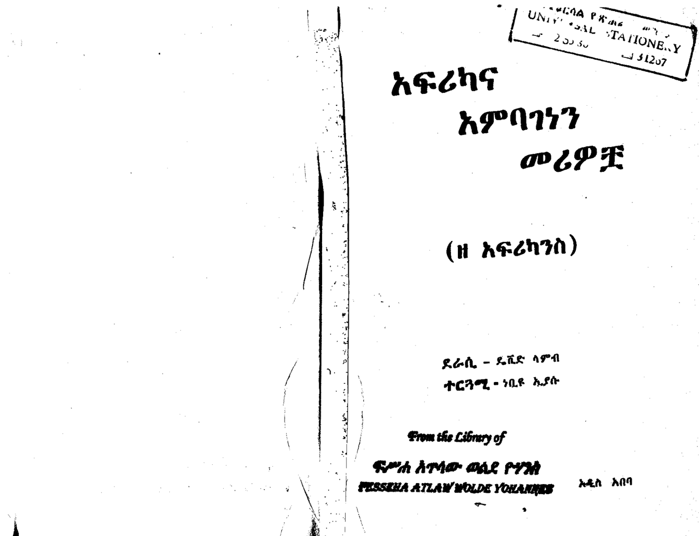
አፍሪካና አምባገነን መሪዎቿ (ዘ አፍሪካንስ) afrikana ambagenen meriwochwa (ze afrikanes) ዴቪድ ላምብ, ነቢዩ ኢያሱ · 1984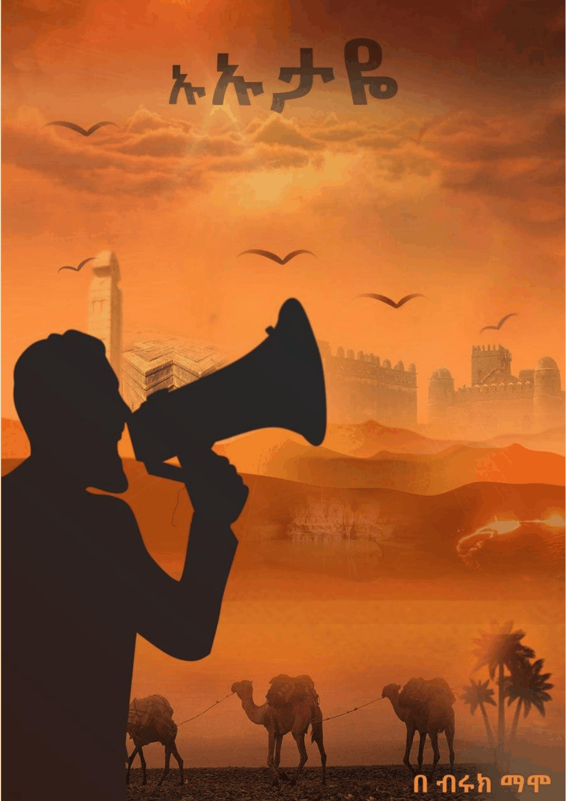
ኡኡታዬ uutaye ብሩክ ማሞ · 2020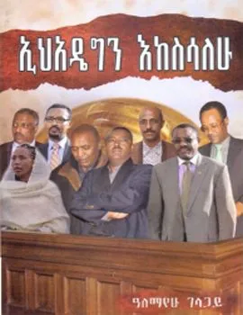
ኢህአዴግን እከሳለሁ ihadegen ekesalehu አለማየሁ ገላጋይ · 2012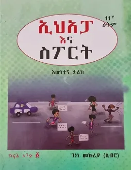
ኢህአፓ እና ስፓርት እዉነተኛ ታሪክ ihapa ena separet ewunetenya tarik ገነነ መኩሪያ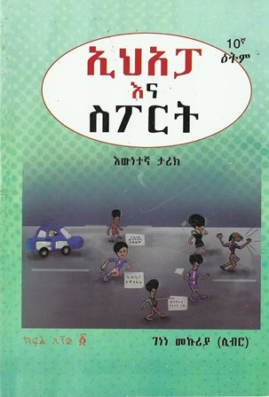
ኢሕአፓ እና ስፖርት ክፍል ፩ ihapa ena seporet kefel 1 ገነነ መኩሪያ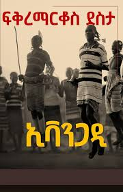
ኢቫንጋዲ Evangadi Fikremarkos Desta · 1998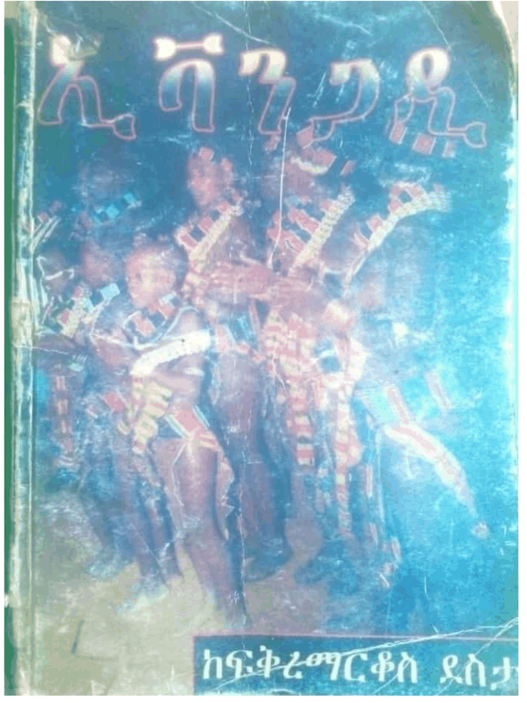
ኢቫንጋዲ ivangadi ፍቅረማርቆስ ደስታ · 2010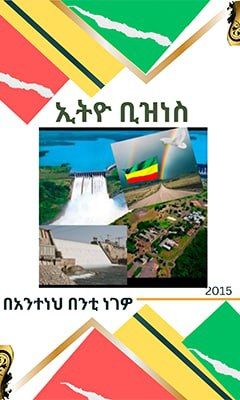
ኢትዮ ቢዝነስ ityo biznes አንተነህ በንቲ ነገዎ · 2015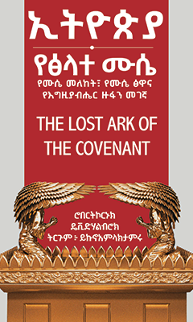
ኢትዮጲያ የፅላተ ሙሴ ityopiya yetslate muse ዩኒቲ መፅሐፍ መደብር ፋሲካ · 2013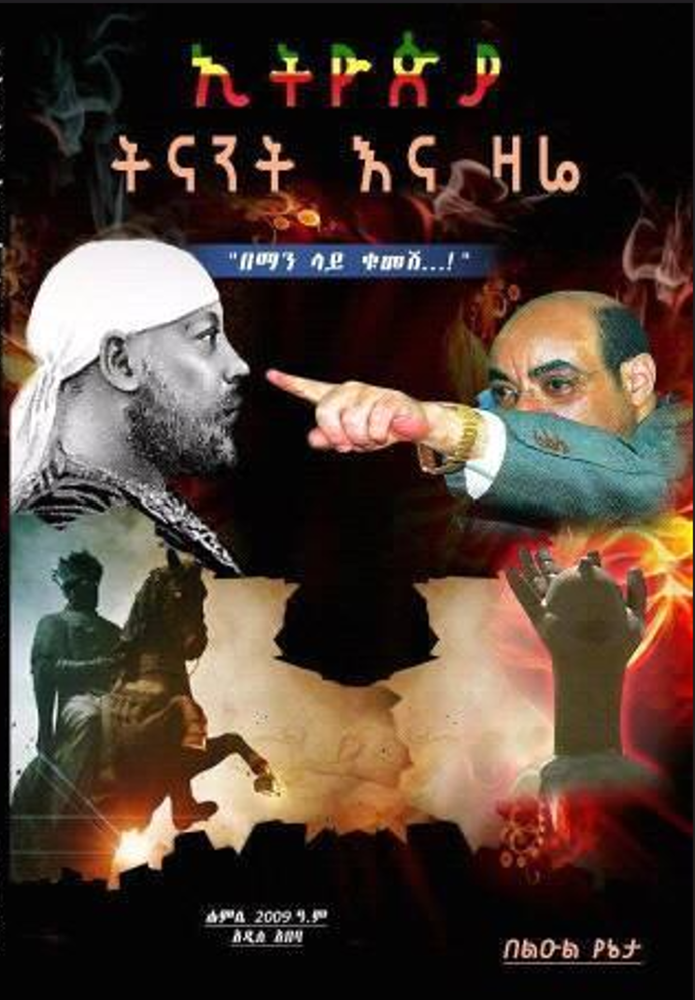
ኢትዮጵያ ትናንት እና ዛሬ ityopya tenanet ena zare ዮናስ ሀበሻ (ልዑል የኔታ) · 2014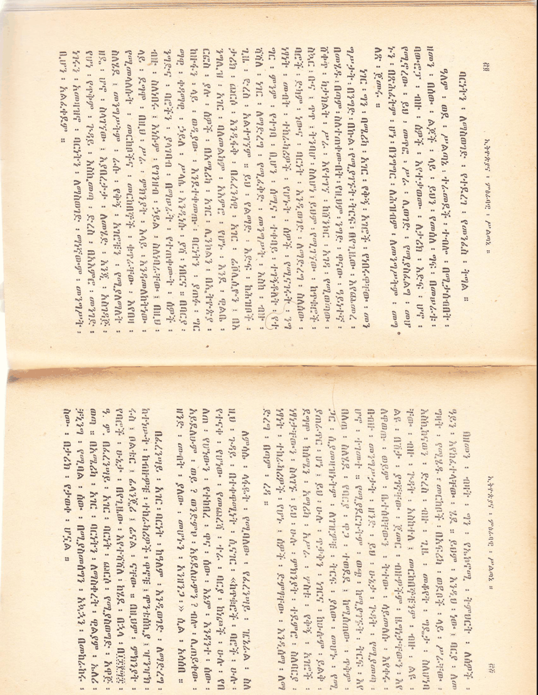
ኢትዮጵያና ምዕራባዊ ሥልጣኔ ityopyana merabawi seltane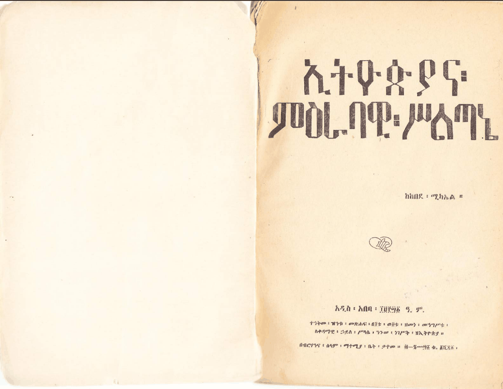
ኢትዮጵያና ምዕራባዊ ሥልጣኔ ityopyana merabawi seltane ከበደ ሚካኤል · 1948